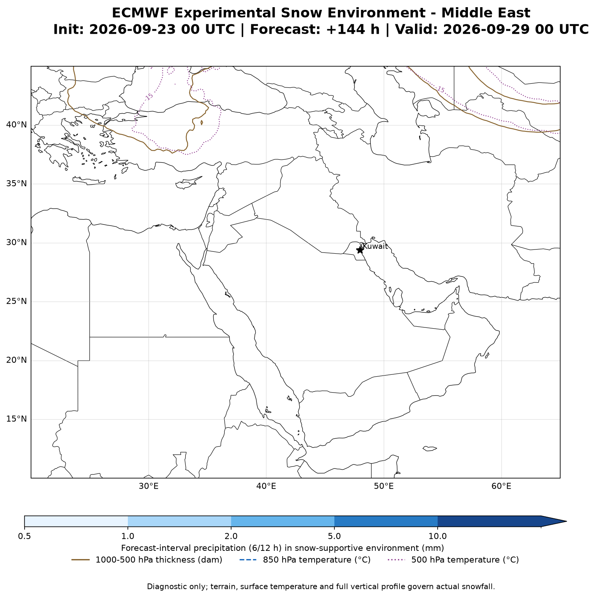

مؤشر السيول المفاجئة Flash Flood
يعرض أعلى قابلية للسيول المفاجئة خلال فترة التوقع من +0 إلى +72 ساعة، اعتمادًا على أمطار ECMWF وشدة الهطول.

البَرَد الكبير والعواصف الرعدية وTTI والعواصف الرملية الجدارية والثلوج — توقعات ECMWF حتى 7 أيام
يعرض أعلى قابلية للسيول المفاجئة خلال فترة التوقع من +0 إلى +72 ساعة، اعتمادًا على أمطار ECMWF وشدة الهطول.
يركز على HGL وWBZ وقص الرياح، مع دعم LI والرطوبة وOmega عند 700/500 hPa. المؤشر لا يمثل قطر حبة البَرَد بالسنتيمتر.

يعتمد على LI والرطوبة وOmega والقص، ويضم TTI القياسي وTTI المعدل للكويت باستخدام نقطة الندى السطحية.

يجمع الهبّات والضغط السطحي العميق والنفاث القطبي وتفاعل النفاثين والجبهة الباردة والمنخفض القطبي أو الثلجي، دون الاعتماد على الحمل الحراري.

نسبة اتفاق 31 عضوًا من الإنسمبل الأمريكي على تجاوز 25 مم خلال 0–72 ساعة. ارتفاع النسبة يعني ثباتًا أكبر للسيناريو.

العضو الأكثر تطرفًا في كمية المطر ضمن 31 عضوًا خلال 0–72 ساعة؛ وهو سيناريو محتمل وليس المتوسط ولا التوقع الحتمي.

نسبة اتفاق 50 عضوًا متاحًا من الإنسمبل الأوروبي على تجاوز 25 مم خلال 0–72 ساعة. ارتفاع النسبة يعني ثباتًا أكبر للسيناريو.

العضو الأكثر تطرفًا في كمية المطر ضمن 50 عضوًا متاحًا خلال 0–72 ساعة؛ وهو سيناريو محتمل وليس المتوسط ولا التوقع الحتمي.

نسبة اتفاق 20 عضوًا متاحًا من الإنسمبل الكندي على تجاوز 25 مم خلال 0–72 ساعة. ارتفاع النسبة يعني ثباتًا أكبر للسيناريو.

العضو الأكثر تطرفًا في كمية المطر ضمن 20 عضوًا متاحًا خلال 0–72 ساعة؛ وهو سيناريو محتمل وليس المتوسط ولا التوقع الحتمي.

هطول مع تبريد 850 hPa إلى −5° و500 hPa إلى −25° وسماكة 1000–500 hPa عند 540 dam أو أقل. الخطوط الملونة تعرض درجات الطبقتين والسماكة، والتضاريس تؤثر في وصول الثلج إلى السطح.
